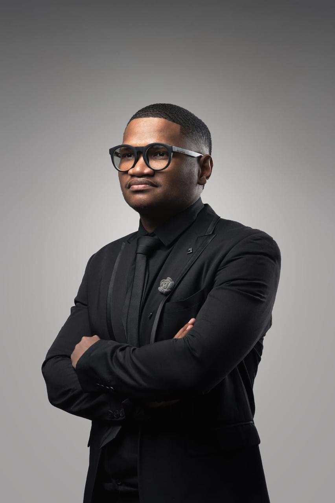

Leadwith vision.
Practical development for people
and businesses ready to grow.

Meet Chaeslin.
Chaeslin is the pastor at Crossover City Church, and that's the foundation everything else sits on. Outside the pulpit he mentors people one-on-one, works as a life coach, consults with business owners on strategy and leadership, and runs the digital side of Trollip Legacy Builders. Different settings, same purpose: help people get honest about where they stand and stay with them until they move forward.
Build the whole legacy.
 Explore
ExploreTurn ambition into execution.
Strategy, development, problem-solving and accountability for entrepreneurs.
 Explore
ExploreBuild the person behind the vision.
Clarity, purpose, structured guidance and practical tools for meaningful growth.
 Explore
ExploreBuild a digital presence that works.
Social media, content, branding and campaigns that grow your online presence.
“I don’t take this time, wisdom, and investment lightly. I’m grateful for the genuine investment in my growth.”
Education & Training.
Chaeslin has officially joined Konnect Education as Head of Konnect Education for the Northern Cape.
A partnership focused on getting people and organisations into real, accredited training — across education, IT and computers, wholesale and retail, finance, travel and tourism, and early childhood development (ECD+). The courses are industry-relevant and affordable, delivered in a supportive environment built around real career outcomes, backed by corporate partnerships that extend the impact into the wider community.